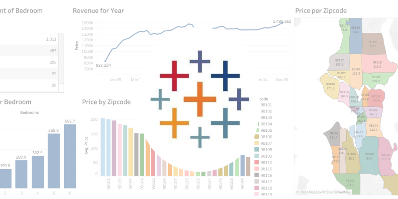
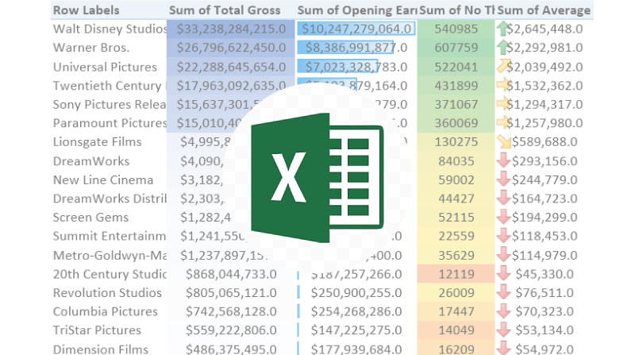

I'm a Chemical Engineer turned Data Scientist passionate about driving impactful insights through data analysis. Proficient in statistical analysis, machine learning, and tools like SQL, Python, Tableau, Excel, and Power BI, I excel at transforming data into actionable insights. My expertise extends to Machine Learning (ML), including Natural Language Processing (NLP) and Computer Vision. Additionally, I have experience in web scraping, enabling me to tackle diverse challenges and make a positive impact through innovative solutions. You can view my qualifcations via my Resume link

Preprocessing of NashVille Dataset for Visualization. This involved cleaning the dataset and removing unimportant information.

Here is my dashboard of my recent Tableau projects.

Analysis on the Opening sales and Profits of movies. CLick view to opem the Github page. To view or download the PDFs, click here

To view my Github files of my recent visualizations on Power Bi, click View below. To view or and download the PDFs instead, click here
Sentiment analysis to determine how good or bad a movie is from it's reviews.
Sentiment analysis to determine how good or bad a movie is from it's reviews.
Scrollable Grid